Durante o módulo 2 do curso de Análise de Dados: Meus primeiros passos em Python da PrograMaria, realizei diversas análises sobre a quantidade de comparecimento, como filtrar os dados por estado e/ou município, calcular a quantidade de comparecimento e abstenção, tanto geral quanto por turno, e agrupar os dados por gênero, cor, faixa etária e/ou escolaridade. Também pivotar (cruzar) dados entre gênero e escolaridade ou faixa etária e cor/raça. Por exemplo, durante uma pesquisa sobre separação judicial, descobri que a maioria das pessoas separadas judicialmente são mulheres. Isso levantou questões sobre as razões dessas separações e as possíveis causas, considerando fatores culturais e medo de agressões.
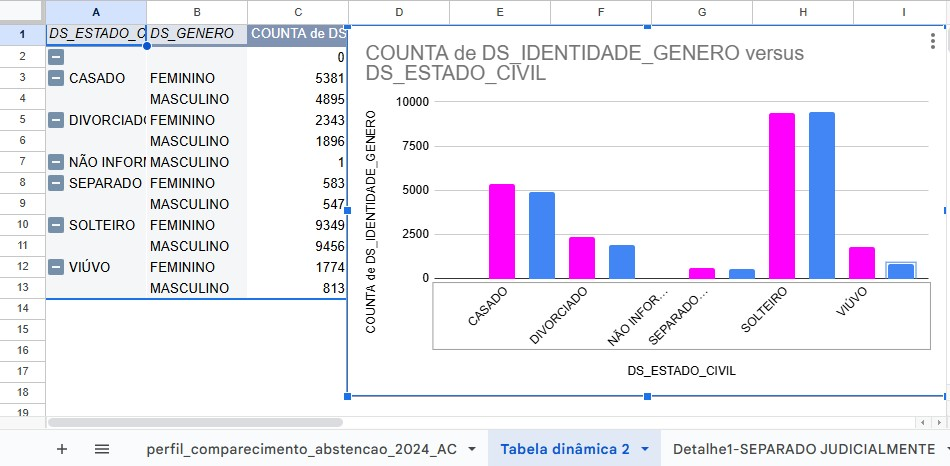 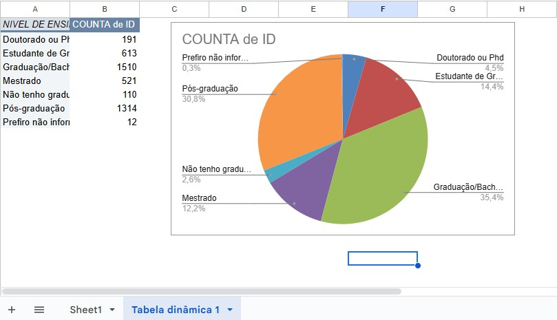 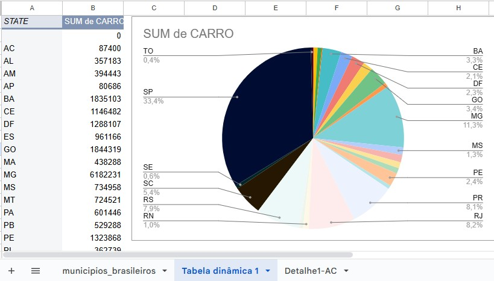 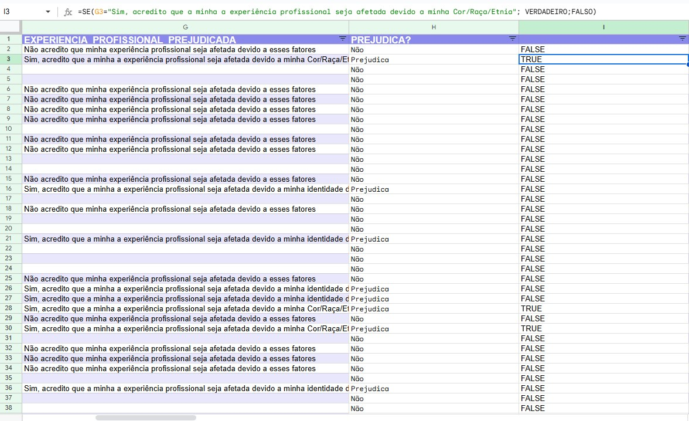
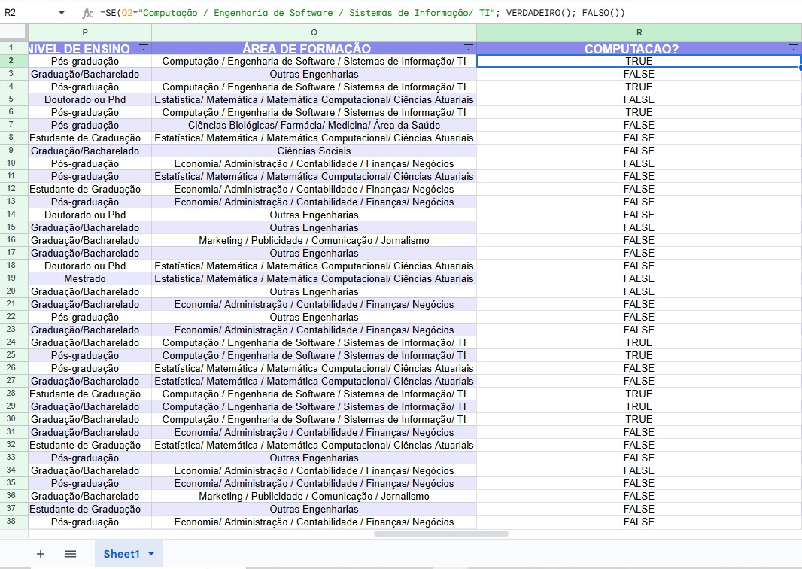
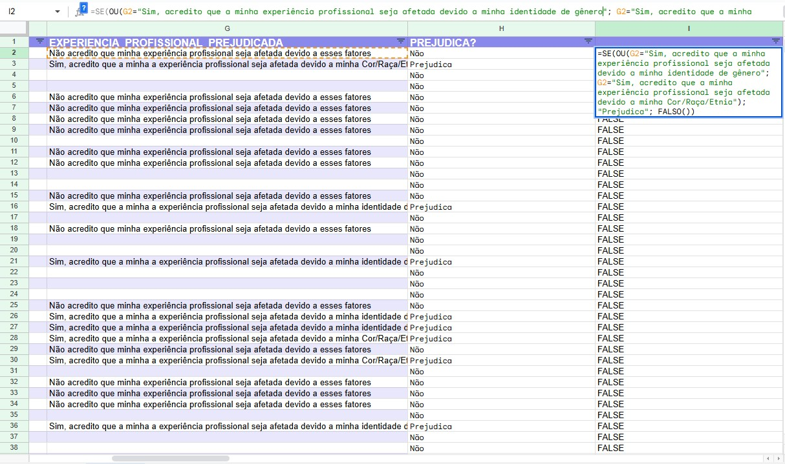
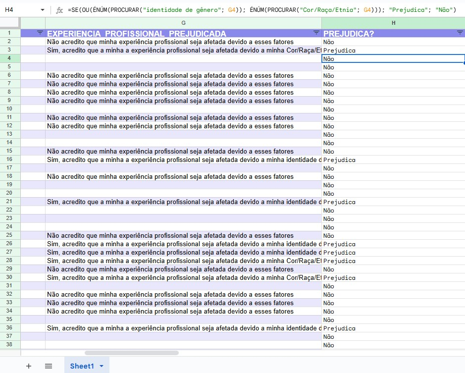
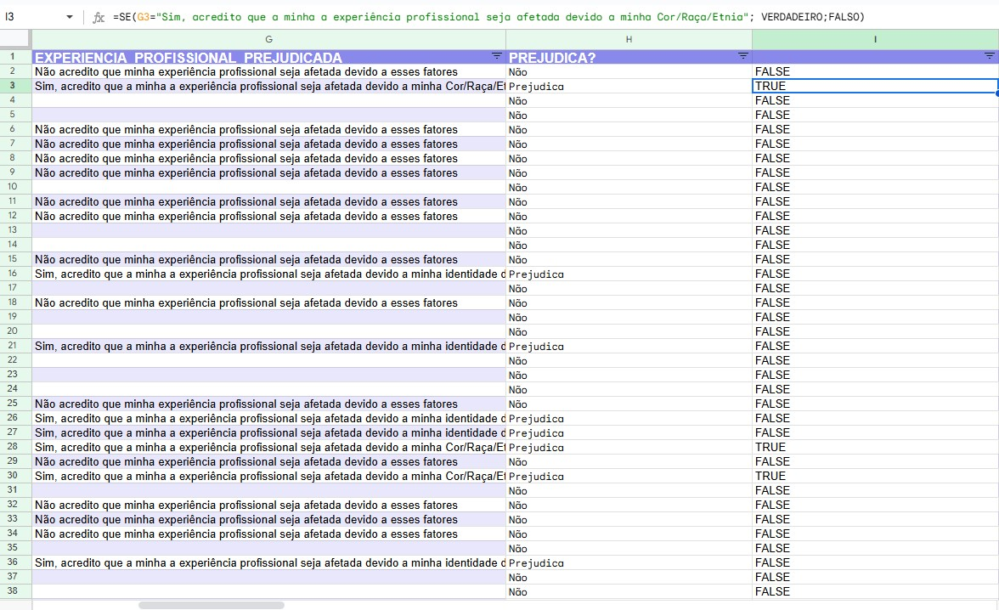
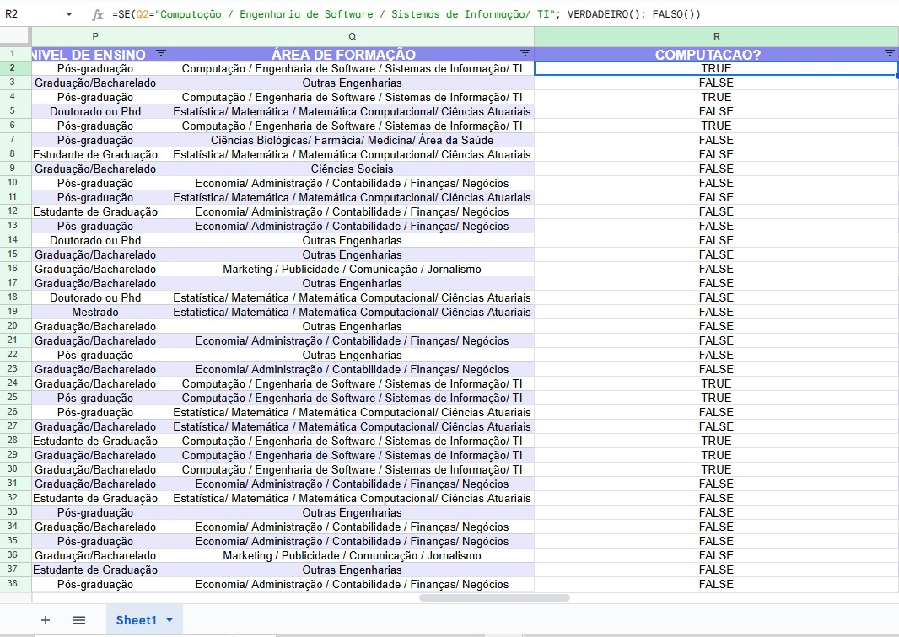
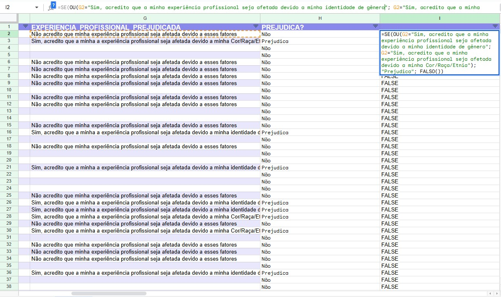
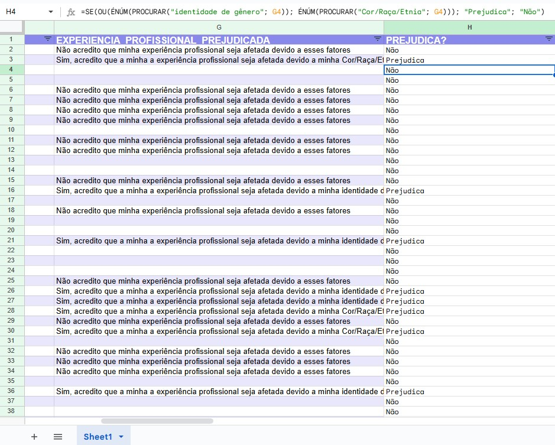
Entendemos que os dados podem ser estruturados, como tabelas, não estruturados, como texto, ou semi-estruturados, como arquivos XML. Na análise de dados, é importante ter um objetivo claro, pois sem ele, a análise se torna apenas um conjunto de informações sem utilidade. Minha primeira análise foi focada na distribuição de raça e gênero, e com base nisso, percebi o quanto a motivação pessoal pode influenciar o início de um estudo. Demorei oito dias para começar porque não me sentia merecedora das bolsas de estudo, mas, ao finalmente começar, percebi que a análise de dados pode abrir um mundo de possibilidades para melhoria pessoal e profissional.
Refletindo sobre o que aprendi até agora, percebo a importância de desenvolver tanto habilidades técnicas quanto comportamentais. O vídeo da Eli Ferreira, no qual ela aborda seus próprios sentimentos, trouxe insights valiosos e muitas ideias de como posso ser diferente. A frase que ficou ressoando em minha mente é: "É necessário enxergar o passado para ter maior compreensão do presente e, assim, transformar o futuro." Espero que este projeto de análise de dados nos ajude a alcançar novos horizontes e a nos tornarmos melhores profissionais e indivíduos.